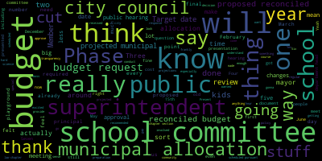
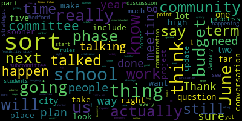

AI-generated transcript of 6.3.2024 Regular School Committee Meeting
Back to all transcripts
[Lungo-Koehn]: and 516704. We have roll call of the Medford School Committee, member Russo.
[SPEAKER_01]: Member Bramley.
[Branley]: Present.
[SPEAKER_01]: Member Graham. Here. Member Ntapa is delayed. Is he online? He's delayed. Member Labate.
[Ruseau]: Present. Member Rheinfeld. Present. Member Russo, present. Mayor Lungo-Kern.
[Lungo-Koehn]: present, six present, one absent so far. If we can rise to salute the flag.
[SPEAKER_04]: I pledge allegiance to the flag of the United States of America, and to the Republic for which it stands, one nation under God, indivisible, with liberty and justice for all.
[Lungo-Koehn]: We have executive session pursuant to General Laws 30A, section A3. The Medford School Committee will convene an executive session to update to get an update on negotiations with the Medford Educational Secretaries, AFSCME, Council 93, Medford Teachers Association for Kids Corner, Medford Teachers Association for Power Professionals, because an open meeting will have a detrimental effect on the bargaining position of the committee, and the chair so declares. Executive session pursuant to General Laws 30A, Section 8.3, the Medford School Committee will convene in an executive session to discuss collective bargaining with MTA regarding a grievance dated March 2024. Motion for to go into executive session by Member Reinfeldt, seconded by Member Graham. Roll call, please.
[SPEAKER_01]: Member Branley. Yes.
[Lungo-Koehn]: Yes.
[Ruseau]: Member Ntapa absent. Member Olopade. Yes. Member Reinfeldt. Yes. Member Rossell. Yes. Mayor Longo.
[Lungo-Koehn]: Yes. Six in the affirmative, one absent. We're going to go into executive session and return at or close to 6 p.m.
[SPEAKER_04]: Right, check one, two. Check one, two. Now, let me see if I can.
[Lungo-Koehn]: members so there any student reps on student reps on do you know oh you're not on yet okay no problem oh that's right okay okay so no student reps We'll go to the consent agenda, bills and payrolls, approval of capital purchases, regular school committee meeting minutes from May 20th, 2024, strategic and capital planning subcommittee minutes, May 21st, 2024, and curriculum instruction assessment and accountability subcommittee, May 28th, 2024.
[Reinfeld]: Motion to approve.
[Lungo-Koehn]: Member Reinfeldt, seconded by? Second. Member LaPardee, all those in favor? Aye. All those opposed? Consent agenda is approved. We have reports of subcommittees, strategic and capital planning subcommittee meeting held on May 21st, 2024. Thank you, Mayor.
[Graham]: Thank you, Mayor. I'm actually going to hold most of my comments because Member Rousseau helpfully crafted a policy that covers much of what we talked about. The only other thing that I would add is that we will be making updates to the existing capital plan for the schools in time for that next cycle next year, assuming that that passes tonight. So we can get to that later, the process, which I think was the more substantive part of our conversation later on. Thank you.
[Lungo-Koehn]: Thank you. Curriculum instruction assessment and accountability subcommittee meeting held on May 28, 2024.
[Reinfeld]: Yep, I don't have a lot to share. This was really a foundational meeting. We had a great crowd of people who gave us an overview of what was happening and we're moving forward towards phase two.
[Lungo-Koehn]: Thank you, Member Reinfeldt. We have our report of superintendent updates and comments. Dr. Maurice Edouard Vincent.
[Edouard-Vincent]: Good evening. It's June 3, which means Pride Month has begun. Medford kicked off its celebrations with a wonderful Pride flag raising festival at City Hall on this past Friday, which I was pleased to attend. I want to thank our mayor, thank Ms. Frances Nwaje, the city's DEI director, the members of your team that helped to set it up. It was truly an enjoyable event for all. I also want to just let the audience know that this Saturday, students from Medford High School, GSA, will join the wider Greater Boston LGBTQIA plus community in the Boston Pride Parade. So we wish them clear skies, lots of fun, and don't forget to wear sunblock. Medford Public Schools embraces our LGBTQ IA plus community members this month, students, staff, family members, and all those who call Medford home. The diversity of our community is an incredible strength, with each individual contributing their unique talents and perspectives to the whole. We also firmly believe in and defend the civil and human rights of LGBTQIA plus Mustangs and all people, particularly at a time when those rights are often under attack. We all deserve the same chance to thrive and live freely and authentically. Happy Pride Month. I also want to share that last week, we had a wonderful Special Olympics that took place in Malden for our students with disabilities. It was a wonderful event students from other communities participated in that. And I just want to thank our special educators, Miss Bowen and all the members of her team, Miss Lauren Perillo, Denise DeJardins, and many other staff, Miss Principal Michelle Kroll, who was able to attend that event last week in Malden. It was excellent, and it was wonderful weather as well. I also would like to say that last week we had a wonderful event, the Junior Olympics for our fifth grade students that are moving on to middle school next year. And we had some pretty bad weather last week. So at the last minute, Tufts University was willing to let us use their Gancher Center. And we're very grateful to that. We want to thank Rachel Perry and all the athletic, the phys ed teachers that participated and the fifth grade staff, all the principals were there. We also want to thank the PTOs, Dr. Cushing for helping to coordinate that event as well. So those were two wonderful year end events for our students. At tonight's meeting, I'm looking forward to recognizing some of our district fine art students for their notable photography accomplishments and recognizing Medford students in the annual scholastic competition that recognizes teens in grades seven through 12. with regional and national honors for their creativity in art and writing in 28 categories. That will be presented this evening by Ms. Suzanne Fee. After that, we will have the opportunity to welcome and celebrate two newly appointed leaders in our school district, Mrs. Nancy Sherman-Hudson, who will begin next school year as principal of the Missittuck Elementary School, and Mrs. Christina Lungo-Dudley, the new director of Kids' Corner. Next, we'll also invite Ms. Stacey Shulman, Director of School Counseling and Behavioral Health, to tell us about the always inspiring Bloomsack Leadership Awards. This unique academic and professional opportunity is made available to Medford Public School students through the extremely generous support of the Bloomsack family. And we look forward to hearing more from Ms. Shulman and Ms. Nakera, one of our students who was the recipient of that award. Dr. Peter Cushing will provide updates on the exciting progress being made on the McGlynn Playground Project, the city's first universally accessible playground, and the District Student Opportunity Act. Thank you, and I look forward to this evening's. presentations.
[Lungo-Koehn]: Thank you, Dr. Edward-Vincent. Next, we'll invite Ms. Suzanne Fee, Coordinator of Fine Arts, to give us Fine Arts student recognition update. Welcome.
[Fee]: Thank you very much for having us. If you could just indulge me for one minute before we get to the awards. We had a busy and exciting month in the art and music departments. May was arts month and we had six student art exhibitions. We had five all school art shows that featured artwork from all students in the school, as well as musical performances. including the band, the jazz band, ukulele performances, recorder performances, singing performances, orchestra, and more. In addition to all the music that enhanced the art show, there were four concert events and two musicals. It was just a tremendous effort that by all of our art and music staff and with the support of building principals and our PTOs and our grant partners that supplemented some of those activities, we're just really proud of the month we had. So I want to thank everybody who showed up and reached out about what a great series of events we had. But now on to the photo contest and the Scholastic Art Award winners. I'm joined by Ms. Van Aken, who has been a teacher at Medford High for many, many years and plays a vital role in both the photo contest and organizing the Scholastic Art Awards. And she is retiring at the end of this year, and neither one of these events would be possible without her extra help and time and dedication. So I just want to acknowledge Ms. Van Aken as well. Dr. Cushing? I think I have a presentation to share so you can see the winning entries. So we'll start with the photo contest winners and the photo contest is a wonderful contest that we have at MHS because it brings out a lot of kids who aren't necessarily taking art classes and stuff so it's a great way to get more kids involved in the arts. So when I call you up, if you're here, we'll give you your award and your prize and your matted photo and you could shake everyone's hand and come around this way. A lot of our seniors are at the barbecue, so I'll be chasing them at graduation to give them their awards and prizes, but we do have a lot of students here. Oh, okay. Well, I'll just read through it and we have the photos. Connor O'Leary in grade 12 got an honorable mention for his photo paddling down. I don't think, I think Connor left for that over here. Kaitlyn Chuang, an honorable mention for her photo shove it.
[Lungo-Koehn]: Yep, make sure we show the photo to both sides.
[Fee]: Stella Heine in grade 12, an honorable mention for walking trees. Evelyn Shumway, who's not here, received an honorable mention for reflection of the sky. And now our category winners, Jonathan Malerba in grade 11, who you may recognize because he's at all of our events taking fabulous photos. He won best action photo for Kaboom. Connor O'Leary again won for best landscape or cityscape, but he is not here. Emma Beardsley in grade 10 won best portrait for Thanksgiving Day. Linnea Strassfield in grade 11, won third place and best nature photo for evergreen. Julia Hollenbaker in grade 12, won second place for Willie from Boston. And Ari Atwell in grade 11, won first place for swim among the stars. And our Scholastic Art Award winners this year, Dakota Mahoney got an Honorable Mention for Fragile Tension. She's not here, she's at the barbecue. Lily Burhagen won a Silver Key for Glass Ceiling. And she also won an Honorable Mention for another piece. And Stella Heining, again, won a gold key for one of her ceramic pieces, Shadow Woman Jar, and an honorable mention for Many Faces Jar. And a silver key for her portfolio work. So thank you very much. If we could just do a quick photo, that would be great.
[SPEAKER_04]: Thanks.
[Lungo-Koehn]: Member Ntapa.
[Intoppa]: Awesome. I just want to say thank you very much, Director Fee for presenting all this. I just want to also say that I have the distinct pleasure of working at an art institution and being a graduate of an art institution. And by doing that, I get to see what everyone from around the state and around the country is producing. Watching our Studio Foundation students go through the the system, working with students all the time. And I can comfortably say I think for the first time that Medford is excelling in the arts and I'm really, really pleased to see all the work that's presented, I mean these are just the award winners. We don't know what people are crafting personally what's in their full portfolios, and just, it's really refreshing to see this much attention to the arts. and seeing how many people were involved in the level that they're at, at grade 10, grade 11, seniors. So whether or not they pursue to do an art education, which I know some of the winners are, but I just want to say like, this is phenomenal work and thank you and congratulations to everyone who won an award and hopefully we'll see what you do next. So thank you.
[Lungo-Koehn]: Yes, thank you very much, Ms. B. We have number three announcement of new positions new principal of the Mississauga elementary school Miss Nancy Sherman Hudson, and the direct new director of kids corner Miss Christina lungo deadly. Dr. Thank you.
[Edouard-Vincent]: So I would love for Mrs Sherman Hudson, and Mrs Christina Luongo deadly to come forward Thank you to the both of you. When we learned this year that Dr. Kathy Kay, we see you, long time principal of the Missituck Elementary School planned to retire at the end of the school year, we knew that it was important to engage the whole school community, including parents and staff in the selection of the next leader of our school, of the Missituck School. Our selection, Mrs. Nancy Sherman Hudson, has a long and impressive resume from her time in the Medford Public Schools, working as an inclusion kindergarten teacher for many years at different schools before joining Dr. K to lead the Missittuc as assistant principal in 2013. Earlier this year, miss Sherman Hudson acted as interim principal of the Mississippi elementary school, ensuring continuity and stability for the school community during the temporary absence of the principal. As assistant principal and interim principal, Mrs. Sherman has played an active role in the daily operations, systems, management, and routines of the school. She has also worked closely with teachers as an educational leader, supporting and coaching classroom teachers throughout the school. I am very pleased to first welcome The next principal of the elementary school, Mrs. Nancy Sherman Hudson.
[Sherman-Hudson]: Okay, my first job was done. Thank you, Dr. Edward Vincent and school committee members. I look forward to continuing to work alongside our very dedicated staff and families at the Mississauga. A special thank you to Dr. Kaye for her mentoring and leadership she modeled over the past 11 years. Thank you, I'm so excited.
[Edouard-Vincent]: Thank you. Thank you. And next, I would like to welcome another leader with an impressive history in our school community. Upon the retirement of Mrs. Linda Selinger, I am very pleased to appoint Ms. Christina Luongo-Dudley as the next director of Medford's Kids Corner Child Care Center. Ms. Luongo-Dudley is an accomplished early educator with experience ranging from infant care to pre-kindergarten. Since 2013, she has worked as a lead teacher at Kids Corner, augmenting her responsibilities in 2018 by becoming the Kids' Corner Assistant Director Program Coordinator in addition to her classroom role. Throughout her years working in Kids' Corner, Christina Luongo-Dudley developed a reputation for peer leadership, effective communication, and student enrichment. Please join me in welcoming the next Kids' Corner Director, Mrs. Christina Luongo-Dudley.
[Luongo-Dudley]: Thank you. Good evening, everyone. I stand here today to say thank you for this wonderful opportunity. It is with the utmost excitement and heartfelt gratitude to each and every one of our families for entrusting me with the privilege of educating and nurturing your children. As your new director of Kids' Corner Daycare, I am committed to providing a safe, inclusive, and engaging learning environment for every child, family, and staff member. This would not have been possible without the support and guidance of many amazing people. I would like to thank Assistant Superintendent Suzanne B. Galluzzi for her mentorship and guidance throughout this process. Her continued partnership will only help me become a better individual and leader for our staff, families, and children. Finally, I would like to thank Superintendent Dr. Maurice Edward Vincent for entrusting me to serve as the new director of Kids' Corner. I am eternally grateful. I am excited for the future of Kids Corner Daycare, as I have many dreams and aspirations for its growth and development. With the upcoming 2024-2025 school year, I am thrilled to begin implementing fresh and innovative changes. I am truly excited about the possibilities that lie ahead, and I'm confident that with the support of our community, we can create a bright and prosperous future for the center. Thank you.
[Lungo-Koehn]: Thank you both, congratulations. We have number four, Bloomsack Leadership Awards. Ms. Stacey Shulman, Director of School Counseling and Behavioral Health, and I see Ms. Bloomsack in the audience. Welcome.
[Schulman]: Hi, good evening. I'm Stacey Shulman, Director of School Counseling. And I am always thrilled to come here to talk about our students' work. The Bloomsack family, Ms. Bloomsack is here with us this evening, has sponsored a student every summer to attend the pre-college program at Tufts for Leadership for Social Change. And we are thrilled that each of our students has done a project, which we'll give back to Medford. Ms. Nakira, Ms. Oprah Nakira, is here this evening to share her project with us. So without further ado, I'll allow her to speak.
[Nkera]: Hi, thank you for having me here today. I think we have a slideshow queued up. Thank you. So I had the privilege of doing this program during the summer at Tufts. And one of our projects was to do something that we're passionate about. So I did a research project about how we can increase representation and access to AP courses at Medford High School. Yeah, so just for some statistics and school segregation accounts for about 40% of segregation at schools. And sadly, this is when you can kind of tell the level of course at the school itself by the makeup of the students in the school. And one way that we can combat that is looking at policy changes that we can make to increase access to these courses. And this also applies to not only minority students, but also low income students or students from single parent households who don't have access to tutoring or guidance that could help them succeed in these courses. So some possible causes for this are a lack of diversity in the teacher workforce itself. And this is really detrimental to the students themselves because studies actually show that students do better when they're represented within the teachers that they have. And then also teacher expectations could be a root cause just because of implicit biases as well. So just for some examples of policy that could lead to this, well, the first one I have is tracking. So I think Medford High School actually got rid of this this year, but before we had this policy where you had to take a math test in sixth grade and that kind of depended where you went or what math classes you took in high school. So this limited access to calculus, for example, for a lot of students who maybe didn't have access to tutoring to do well on these tests. And this is not only, this is not necessarily to say that we shouldn't use tracking in schools, but just that we should also supplement tracking with, for example, more guidance for students who need them, who are either minority students or low-income students, and looking at how we can make these programs accessible for all students. And then just some community organizations that are working on this issue are, for example, the NAACP. So they have science fairs that encourage achievement in STEM and other academic subjects. And these are some things that we can incorporate at Medford High School and other communities as well. And thank you for listening to my presentation. Thanks.
[Lungo-Koehn]: Great job, thank you so much for presenting. Member Russo?
[SPEAKER_01]: I'm sorry, I just started eating a cookie.
[Ruseau]: Could we get that presentation sent to us, please? Thank you so much, wonderful.
[Edouard-Vincent]: Thank you.
[Lungo-Koehn]: Thank you for joining us, Ms. Bloomsack. And thank you for the donation, yeah. Thank you.
[Edouard-Vincent]: Ms. Shulman. Ms. Shulman.
[Lungo-Koehn]: Ms. Shulman.
[SPEAKER_04]: I'm going to use my phone. Yes. Okay.
[Lungo-Koehn]: We have number five, our McGlynn playground update presented by Dr. Peter Cushing, assistant superintendent.
[Cushing]: Good evening, Madam Mayor, members of the school committee. Thank you very much for this opportunity to present. I'll just preface this as we head into this slideshow and presentation by saying they say a picture is worth a thousand words. I'll say in this instance, the pictures don't do the project justice by any stretch of the imagination. And I know that several of you have been out to the site We also have a tour for members of the city council, members of the school committee this Thursday at one o'clock as well. And so we look forward to sharing with you the live in-person progress. I also have online my co-chair of the design committee, Shanine Peliquin, who has been really invaluable as a part of this. So I will start to move through the slideshow right now. All right, so here is the overall conceptual design of the construction as was proposed to you. I want you to hold this in your mind as we go through. You can see here one of the areas that was really prone to flooding. This is now where we have built an elevated deck. Playground structures last for about 20 to 25 years in the most ideal conditions. This was installed in 2001, so we got about 22 years out of it. It used to be part of the Mystic River. It's a really wet ground that is overly saturated, and the playground was flooded for much of the year in the winter. I would wager you could have ice skated on a significant portion of it. So why the flooding? Well, because it was a river and the drainage was not well maintained, well cared for. I want to thank the DPW for in the last year and a half, they went in, they really excavated, put in some temporary drains, and they did a really great job. And the land itself is just wet a lot of the time. So what's going on behind the fence? Thank you all for being at the groundbreaking back in December. I should say the snow breaking at that time. But we, We've been working really hard over the winter to really demolish the old playground, build in drainage. The drainage is really amazing. It's oversized, or I'd say properly sized, which means it's rather large to handle the amount of water that we're going through. We've put in rain gardens. We've done electricity out to the playground, so we're not running extension cords. We've done data ports out to the playground, so that we'll have that available The rocks and the boulders that you'll see throughout the site have actually been brought in from Carr Park. and that work that's been done there, it's a really cool, it adds a really cool feel to the playground, just the boulders themselves. We've been finalizing play structure, design, colors. We've been having weekly meetings with our design team and construction team. We've been ironing out some of our differences and some of our, you know, questions that arise. And so I put this image up there again, just so that you can get a sense of the massive scale that this project was. It started with resurfacing the playground and the CPC and others were like, how about we time out on that? Because that was going to be in of itself well over half a million dollars to just rip up and replace the soft surfacing. And so what they did was they funded a design study that was put on hold, I'm going to be honest, for probably about 18 months while COVID took precedent. And why I want you to really get a vision for this picture, this aerial, is for how we took a lot of underutilized space, and with Shanine and others' input, really moved forward with maximizing our space. So here you can see the pavilion in phase one. All that gray, dark tar will be covered with poured in place. The turf field was recently installed. The pavilion now has its roof on. We hope to have outdoor movies, concerts, things along those lines where families and school personnel can enjoy the turf field. We've done 66 new native trees, countless bushes, shrubs, and other things. The landscaping looks absolutely beautiful. And the tree area, students repeatedly said that if anything happens to this tree, we'll just die, or we won't be able to really enjoy it. I forget, Shanine can add. She's a co-host, so she can chime in. I forget their exact statement, but basically they would have been despondent if we had done anything to that tree. So we've been extraordinarily careful with it. There's a gradual pathway around the tree that will be covered in a semi-permeable pavement called Flexi-Pave. And in the lower corner, you can see the deck that will serve as another outdoor classroom type space. We've put in multiple picnic tables that are accessible. And so moving through the pictures, here's our outdoor classroom. The logs are set so that there's multiple spaces for accessible seating, wheelchair seating, and all of the gravel in this area will be covered with the flexi-pave permeable paving. And accessible garden beds allow for a wheelchair to go underneath and multiple heights for students of various heights and sizes. Coming up next, fencing will be installed. We're expecting pavement to go in this week, the asphalt pavement that needs 28 days to cure. We'll start digging and playground equipment areas and creating landforms. We have some hills to create throughout the remaining area and lots more to come. So if you have any questions, feel free to email Shanine or Amanda Santrella. They're really taking point and answering questions. I'm always happy to answer any questions, but look forward to seeing anyone who hasn't been able to make it to the site this coming Thursday at one o'clock. We're hoping that it is not a monsoon as it has been the last two Thursdays. So if you have any questions, feel free, or Shanine, do you want to chime in?
[Peloquin]: I think you covered it pretty well.
[Graham]: Member Graham? Thank you. I actually have had a chance to tour the playground, and it's super exciting. I was involved in the CPC applications that started this, actually, that happened before I was on the school committee. And it started out as a collaboration between the PTOs at the three schools that got resurfacing at that time. So it was the Missittuc, the Brooks, and the McLean and the folks at the McLean. were very committed to making sure that what they did for that school served the school for the long haul and not in the just the immediate, like, I want the same as everybody else kind of way. So I want to just say thank you to them for their patience, because this has been a long process, much to all of our, you know, chagrin, like we all could have done without COVID. But here we are. And the project is amazing. And we're still accepting donations. And maybe we can put another reminder in the weekly in the weekly update from the superintendent that that's happening. So we are still looking for community donations to support, you know, making sure that we can really sort of dress this proper place out the way that it deserves to be. There's so many trees going in. It's going to be the envy of every elementary school and the question is going to be which one is next. So I'm hopeful that we'll be able to find some money for those conversations quickly because this playground is far above anything that Medford Public Schools has ever been able to see or deliver to students before. Thank you.
[Cushing]: The thing that I do want to say publicly, I've said it to everybody here. I really feel that it's a smaller project, but this should serve as inspiration for everybody for the Medford High School project as to what good design, good construction oversight, and good process of getting community involvement really can do.
[Lungo-Koehn]: Thank you. And just from the chair, I want to thank you, Dr. Cushing, as well as the committee that worked on this for quite some time. I know member Graham's one of those people, former member McLaughlin and Ms. Pellequin and a number of other people that just put their time and soul into this. So happy to see it come to fruition. It was pretty exciting to tour it. Like member Graham said, to see a park that's this inclusive and it's gonna be utilized by the entire community, not just those three schools is something to be proud of. Thank you. Member Rousseau, then we have Ms. Pelquin.
[Ruseau]: Thank you. I brought my kids to the old playground when they were little and even did skate, not on skates, but it was definitely skating material. And it's really, I did get to tour it and it is, while it is, when I toured it, it's far from done. It is shocking that it's the same, footprint really that's sort of the thing that's hard to really wrap your head around is that the old one felt frankly small and this just feels so big it's like a like a TARDIS or something from Doctor Who it's like how on earth did you get all this in here doesn't feel crowded it's really amazing and I cannot say enough good things about it, and I'm super excited for the stuff that's yet to come. I know that there's a lot of stuff that looks tar color, but that's going to be colorful. And I can't remember, I think it was Ms. Pelequin who explained the way the color differentials will help those with low vision and just the thoughtfulness around things. Because when you first glance at it, you're like, there's all these opportunities for kids to fall. But of course, we want kids to have the opportunity to fall. The old playgrounds make them so safe that they are, can't possibly skin a knee, but also they're boring is thankfully becoming a thing of the past. Cause like I drive through Belmont every day and they have a beautiful playground. It looks like architecturally like gorgeous, but it's all brown and it is all that style of nobody can get hurt in our playgrounds. And I'm sure it costs probably more than our playground. But I'm glad we're not going there and that it's going to be a place the kids can't get enough of. And my kids are way too old to enjoy it. So I'll just go by myself. But thank you so much for all the work. And it's really an enormous number of people involved. And I want to thank the mayor and and the residents for funding it through the CPC because It wasn't the cheapest thing we could have done is an understatement, but I think our kids are really going to benefit from it. And not just the kids at the McGlynn, like my kids didn't go to the McGlynn, but we went there anyways. So I think that the kids of the entire city are gonna drive there. There's parking, especially on a weekend. So thank you.
[Lungo-Koehn]: Thank you member Rousseau. I think we used a number of funding sources, ARPA, CDBG, CPA, and one or two other as well. It takes a village, including when you have to finance something. I'm miss Pelican.
[Peloquin]: Sure. Yeah, the other funding source was a federal earmark from representative Barbara through the DCR. I just wanted to say for those of you who are able to visit or who are already visited, you'll hear me say this as well, but. I think one of the things to know is that this is the precedent setter. It's not that the other schools aren't going to get this. It's that this is the way we're doing things from now on, right? We want to make sure we have robust community input processes and really hear from the kids first. I'm really proud of the way that this community has listened to the kids and then the staff on how to make it really workable. And then the other thing to know, for those of you who haven't heard us present before, that we did also use CPC funding to do assessments of the other MPS playgrounds because there are six total that are owned. And we were able to get new equipment for the Roberts and Brooks that had broken equipment and a new, just a new panel for the Missitook as well to make things safe. So those playgrounds have been inspected and are now safe and they will last longer while we figure out the funding pieces for how to, improve those schoolyards when the time comes. But those playgrounds are, they're up to the standard of care with the new surfacing and replacement equipment. So those schools did get pieces of equipment and we anticipate these kinds of processes of really deciding what works for each school in the future.
[Lungo-Koehn]: Thank you very much. Thank you. Thank you, Dr. Cushing. We have an update also by Dr. Peter Cushing, Assistant Superintendent, Student Opportunity Act.
[Cushing]: Good evening. This was a report that we originally hoped to get a vote for you on April. sorry, on April 29th, but due to budgets and other presentations and stuff, the proverbial can was kicked. So I'm presenting here tonight on our Student Opportunity Act submission. We receive student opportunity act was first conceived to really rectify funding disparities for districts across the Commonwealth. Who you know typically urban. Typically underserved receive significant funding this Medford as part of our. our chapter 70 money, so this is all now rolled into our chapter 70 money, receives approximately an additional $135,000 based on the governor's allotment this year. We may be receiving more based on the House and the Senate. That's a may. We anticipate that we will. However, these are numbers that we've already really accounted for. This is not in addition to we're not getting an additional check or anything along those lines, but then there are certain requirements that we have to do as part of the plan. So this is our report. So three key priorities, continued development of a robust early literacy program for grades K to five in all four of our elementary schools, a commitment to early literacy screening, in grades K through 3 with continued monitoring throughout middle school and refined the Medford High School Saturday Acceleration Academy program that began in January 2024 to provide targeted support to identified high school students and rising ninth graders. So identified eighth graders that are rising to ninth grade as well. So the investments that we're planning and again only $135,000 a year approximately. But these investments will come out to about $720,000 over the next three years, $165,000 for early literacy screening and support, $435,000 for comprehensive support for early literacy programming, and really intense in-kind professional development, $120,000 for Saturday Acceleration Academy. And so this is directly taken from our application that I provided to you, that the district is committed to these initiatives despite significant financial challenges on the horizon that nominal support from the Student Opportunity Act will ameliorate to a certain degree. Basically, we are picking up the lion's share with local money to really support this because the Student Opportunity Act doesn't really deliver a whole lot to the students of Medford. So one thing though that under the new Student Opportunity Act pieces that they've put in the last year, year and a half, is to really try to figure out how we're gonna measure family engagement. This is something that we and most districts are struggling with. We are trying to really engage families. Recently, we had about 60 families, 60 individuals sign up for an event that Ms. Shulman put on, we had 16 actually show up. So, just some of the challenges that we face, but we're going to review metrics from our mass communication system. We're going to deploy surveys as needed to families. Uh, we're going to monitor school site count, and that'll be a panorama survey that we're working on with the high school and hopefully get down to the other schools as well. We'll monitor school site council compositions to include family representatives of our targeted groups, um, review data from talking points, uh, explore and deploy further rounds, future round tables, for families and caregiver. We've had some success with those at the height of the pandemic, less success with those as we came out of the pandemic. So the school leadership respectfully requests a vote of the Medford School Committee to approve the plan that you have in front of you. I gave you the brief right now. And for me to also amend the date to June 3rd, 2024, as opposed to the April 29th in your packet.
[Lungo-Koehn]: Motion to approve the plan. Motion to approve the plan by Member Graham, seconded by?
[Edouard-Vincent]: Second.
[Lungo-Koehn]: Member Olopade, all those in favor? Aye. Opposed? Motion passes. Thank you, Dr. Cushing.
[Cushing]: Thank you.
[Lungo-Koehn]: We have no presentations of the public, but we do have continued business. We have MSBA slash MCH SBA update table from May 20th, 2024 presented by Member Graham, School Building Committee meeting, May 13th, 2024. Member Graham. Thank you.
[Graham]: Just a few brief updates. There are five deliverables in the eligibility phase. Two of the five have been submitted to MSBA already. The remaining three are on track. I am anticipating that in our meeting tomorrow night the chapter 74 eligibility form will be finalized and approved by the committee and they will do a first draft review of our our educational profile where we will look at that before June is out. So we are sort of pushing hard to make sure that we are getting all of our deliverables in just as quickly as we possibly can. I'm working with the mayor and the president of the council to make sure that the right votes get taken to fund the feasibility study, which will rely on free cash. So all of that also just to happen here in the month of June in some capacity. In terms of some of the work the committee has been doing, we have established two subcommittees so far. One is about communications and community engagement, actually three subcommittees. Communications and community engagement has built a plan that includes some surveying that we'll do in the short term to ask the community sort of what their questions are so that the website can attempt to answer some of those questions proactively. We also have talked about a strategy of how to start to include the community in the conversation. It's a little bit of a boring conversation right now because it's a lot of paperwork. But once we sort of move into the next phases, we're actually talking about things like feasibility study and envisioning what a new building could look like. That'll be a sort of a completely different scenario. So we have a plan that includes things like being at tables at community events and having a pitch deck for lack of a better term that we can use to go talk to all the boards and commissions who might be interested. So we have some like upfront planning and survey work happening really over the course of the summer. And then, you know, sort of really just using this time to set the stage for good proactive communication. We also had a rules and onboarding subcommittee meet. We have established and passed our operating rules, which are very similar to what they are here in terms of using Robert's Rules of Order and trying to take a more, actually a less formal tone than we do even here, but outlining the same rules of public participation that we use here so that we can make sure that our meetings can remain productive. And, you know, overall, have established a path for what happens when we need to onboard new people so we have sort of plans in place for all of that so that somebody coming on board can get up to speed quickly if that becomes necessary which over the life of us five to seven year project it's inevitable. The website, the dedicated website is just about complete in its draft form and it will include bios of all the folks that are on the committee, it will include all of our minutes and all of our agendas and all the documents that we have talked about so far, submitted documents, that kind of thing. And then just other helpful links, FAQs, et cetera. So all of that is about done and ready to be launched. But our anticipation is that there won't be a lot of traction for that until we get into the feasibility study phase, which is just a little ways down the road for us. Again, we have to be done by January 27. We're on track to be done far sooner than that. And the sooner that we're done, the sooner we can get in the queue to go to the board meeting, which happens every other month. And then the sooner that we can move on to those next phases. We also had a finance subcommittee meeting, where we talked with Alicia hunt who's our director of planning and sustain a development and sustainability is that right okay. And she was immensely helpful there's been a lot of questions around. the site of the new high school and whether there are other possibilities besides where Medford High is right now. And she went through, she pulled up a map and went through what those options might be in terms of sort of things that she would be thinking about. We don't need that information just yet, but at some point we will. So, you know, for example, like people have asked about Playstead Park as a potential site. I think that has been noted before. She actually said that's sort of not on her hit parade of places to look, namely because we would be burying the high school further into a corner of the city that is the wealthiest corner of the city. So we'd be sort of advantaging students already who generally have lots of advantage in terms of getting to the high school. And then, you know, there's sort of a whole bunch of transportation concerns with that location as well. HAB-Charlotte Pitts, Moderator): She did cite Tufts Park is maybe someplace to think about because even though it is also sort of in a corner of the city, which is its own HAB-Charlotte Pitts, Moderator): Challenge from a transportation perspective, her thought was like it is in a corner of the city that would actually advantage students who are historically disadvantaged in terms of their ability to get back and forth. She also said that, you know, her planner heart says she would love to see Medford High back in the middle of the city, just like it used to be one day long ago. And so that's sort of also a conversation we talked about, like the complex over at Hormel, and sort of ruled that out for the most part, because it would be too congested with elementary, middle, and high school all sort of having to convene in the same place. So we had a really, really good discussion. We also talked with Fiona Maxwell, who's our purchasing official for the city, and she's certified and meets requirements by MSBA, and she is starting to work on collecting model documents for bringing on our owners project manager, which will be our next our next phase. And we talked about, again, an aggressive goal that on the day where they approve us to go into the owners project manager selection phase that our fee goes out the door that same day. And so that's going to take some advanced work and planning. And so she is starting to talk to the local communities around us who have done this before. to start to pull some of those things together. So everybody's like really eager to get past this phase, which is exciting and has been helpful and collaborative all throughout the process. So it is a big committee. Everything is going great so far. We've had great attendance and great participation. And there's just like a lot of sort of legwork to do between now and say the fall. So we'll continue to sort of work through that We have a meeting tomorrow night. Our meetings are in the bistro so people are welcome to join us in person. They are on zoom. We've not seen a lot of traction yet. It is June. There are a few million things happening at the same time so I'm not surprised but I also think the time for that participation is going to be once we get into the feasibility study where we're hiring a designer who's actually engaging with us to say, tell us, tell us what you want this place to look like and what you want it to be and what you want to be able to do in the space. much like what we talked about with McGlynn, like how do you really thoughtfully design like every last nook and cranny of a building so it both serves a need and provides some flexibility. So all of that's like sort of down the line and that's where really we'll be talking to, you know, to teachers, to staff, to students, to the community and all of that good stuff. So all that's very much to come. So that's just a quick update of what we're doing, but we do have a pretty robust communication plan getting underway, and everyone's excited. I'm happy to take any questions.
[Lungo-Koehn]: Thank you. Member Rousseau?
[Ruseau]: Thank you. I have no questions other than, is there actually a bet whether we can be the fastest at this project in the history of the state? Because I mean, we had documents done before we begun, which has to be unusual. So I'm excited by Vice Chair Graham's ability to keep the gas pedal accelerator, excuse me, pressed to the floor in a way that amazes me. And I feel like nobody's getting run over, which is also kind of impressive. So I wanted to thank you for that because every time I come to a meeting, I can't believe We're done with that document already? We are less, we are, what, 30 days into, we have 172 days, I think? Yeah, so we're doing good, but I'm excited, thank you.
[Lungo-Koehn]: Thank you, thank you, Member Graham. We have new business offered by Member Russo, 2024-28, budget preparation schedule.
[Reinfeld]: Motion to waive this reading.
[Lungo-Koehn]: Second. Will this be going into committee or? No. I want to vote tonight.
[Ruseau]: For first reading.
[Lungo-Koehn]: So I would ask to withdraw that motion to waive the reading. If you don't mind.
[Reinfeld]: Sure.
[Lungo-Koehn]: I've just it's a lot of text.
[Reinfeld]: I'm wondering. I know.
[Lungo-Koehn]: Yes. Okay. budget purpose, I do believe me, I'd rather not have to read it all, but I feel like it would have to, and it's up to you, I don't care, I don't mind, I just think it should be read.
[Ruseau]: Yeah, I'll read it. Let's see if I find any typos or anything as I go through. All right, this is, Policy DBC, which is really hard to say. Budget preparation and schedule. Preparation of the annual budget will be scheduled in phases with attention to specific deadlines. This policy aims to increase transparency into how the public school's budget is developed to ensure the school committee is appropriately involved in budget development and to increase public participation and understanding of how their tax dollars are spent educating the children of our great city. Phase one, planning, target dates of October 1 to December 15th. One, enrollment projections, staffing, current and required, recommended policy changes. Three, expenditure projections of the costs of this year's operation at next year's estimated prices, adjusted for enrollment changes and other cost information. Four, revenue projections, including best estimates of federal, state, and grant funds. Five, facilities information, especially projected surpluses and deficits in classroom space and future needs for repairs. Six, cost effectiveness and other special studies of designated programs, activities, and policies. Seven, draft of the basic school allocation rates and factors and other proposed changes. Phase two, budget request formulation. Target dates of December 15th to February 1st. Within the framework outlined in phase one, the budget is formulated as follows. One, issue budget manual for next fiscal year, procedures and forms, including school allocation and factors, and conduct orientation. Two, principals discuss budget needs with school councils and provide feedback to the superintendent. Three, conduct school committee of the whole meetings with public input to discuss priorities and possible initiatives. Four, conduct administrative review of budget requests including discussion with principals. Five, inclusion of net school spending eligible portions of the capital improvement plan. Six, develop the proposed budget for the member public schools. Seven, submit the proposed budget to the school committee for its review. Phase three, school committee review and approval of budget request. Target date of February 1 to February 28. The budget is presented to the school committee for its review and for public testimony one budget presentation by the superintendent to public hearings will be scheduled pursuant to master law chapter 17 section 38, and three school committees budget decision meetings for our final school committee decision and approval for submission to the city council. Phase four, superintendent and school committee received projected municipal allocation. Target date, March 1st. Number one, the municipal leadership will notify the superintendent and the school committee in writing of the projected municipal allocation. Phase five, proposed reconciled budget developed in response to the proposed projected municipal allocation. Excuse me. Target date of March 1 through May 1. The proposed reconciled budget, including all required cuts to meet the projected municipal allocation is presented to the school committee for review and public testimony. One, if the projected municipal allocation is less than the budget request, A, the superintendent will develop a proposed reconciled budget with cuts to meet the projected municipal allocation. B, the proposed reconciled budget reflecting cuts required to meet the proposed reconciled budget Hmm, that should actually say projected municipal allocation, sorry, will be made available to the school committee and the public. C, if the proposed municipal allocation is more than 1% less than the budget request, a public hearing will be scheduled pursuant to Mass General Law Chapter 17, Section 38N. Section six, school committee transmission to city government. Target date, May 15th. One, the school committee budget request and presentation will be forwarded to the mayor and city council. Two, the proposed reconciled budget in response to projected municipal allocation will be forwarded to the mayor and city council. Three, a cover letter written by the school committee will be included with the above name documents. Phase seven, city council review and approval. Target date, May 15th through June 30. Let's hope it's never that late. The city council approves the municipal budget with the final allocation for member public met for public schools, one review and approval by the city council phase eight school committee of review and approval of final budget target date June one through June 30. The school committee finalizes a budget for the upcoming fiscal year. One, the municipal allocation received from the city council. If the municipal allocation is the same as the budget request, the school committee will meet to provide approval for the final budget. Three, if the municipal allocation is less than the budget request, A, the superintendent will provide any updates to the proposed reconciled budget presented in phase five. B, the updated proposed reconciled budget reflecting the recommended cuts will be made available to the school committee and the public. C, if the municipal allocation is more than 1% less than the budget request, a public hearing will be scheduled pursuant to Mass General Law chapter 17, section 38N. D, if a public hearing is required, a regular or special school committee meeting will be scheduled no less than five days five business days after the public hearing to approve the proposed reconciled budget. E, if a public hearing is not required, a regular or special school committee meeting will be scheduled to approve the proposed reconciled budget. And then four, the final budget will be posted to the Medford Public Schools website. There's a few definitions.
[Reinfeld]: Motion to waive the definitions reading.
[Lungo-Koehn]: Motion to waive the definitions by Member Reinfeldt, seconded by Member Graham. All those in favor? Aye. Opposed? Definition section is waived. Budget requests, capital improvement plan, capital improvement projects, capital budget, final budget, municipal allocation, med school spending, projected municipal allocation, and proposed reconciled budget were the definitions. Thank you, Member Rousseau. HAB-Masyn Moyer): From the chair, if I may, I just want to see if the superintendent can comment on whether or not the central administration yourself and CFO especially have reviewed this and have been able to HAB-Masyn Moyer): Implement comment on it, as I know it's pretty lengthy and I want to make sure that this is feasible.
[Ruseau]: Okay.
[Lungo-Koehn]: Member Rizzo.
[Ruseau]: Can I just speak on it real quick first? So, most of this is actually stuff we already do, especially the budget preparation stuff and the planning. And, you know, those are sections that are for the administration, so obviously any changes, additions, subtractions that they would like. I obviously I think we would be happy to consider those changes. The dates are were difficult, because the city council passed the budget ordinance that says on March 1, that the mayor's office will tell the school district, or I don't know if it tells city council or the school district, what the. potential allocation will be. So we had to really, the dates on this really had to be planned around that date. I mean, to pretend we don't get a number when we get a number doesn't make any sense. So that's why a lot of this stuff is sort of backed up and that March 1 date is so important in this. And then, you know, one of the things in this current budget cycle that I think I don't know if everybody agrees, but I certainly think many people in the community would want to know is like when we had our presentation of the budget last time or the time before, and we we cut 2.2 million and still had 2.7 million left to figure out how to cut. And I understand why we did that, because, like, it was probably very hard to even wrap our heads around where we would make those cuts, but it's June, and if we still had to make those cuts. that's not a lot of time for the community to respond, for us to respond, for staff to be like, all right, we've just decided we're laying off another 50 people, they got families and mortgages. And so I felt it was really important that when we get an allocation, a projected allocation, that we take it completely seriously, and that we have a document that says, if that's our number, here is how we'll get there. We still don't have that now and I understand why and I, I actually support that, because this gap was so phenomenally large, but in a normal year even if there's a gap, we need to be able to say. This is how we're going to do it now we aren't going to put names and say these people are getting laid off all the way back in February that would or March that would make no sense. But, you know, how are we going to get from what we need to what we think we may get the public should know that we should know that, and not a few weeks before schools out. So that was sort of my. my point in all that and then also telling the city council I mean the city council has traditionally received our budget book that we get. And that's, that's the, that's the recommended budget from the school committee that's not what will actually happen. And I think that if we have the budget request, which is that this is what we would like. If we only get that projected allocation, this is what it will look like. And a letter that says, here's how we did it. And no we don't like it, but I think that they need that for their deliberations because I know the superintendent was in the hot seat. And, you know, it's too big of a. The budget is too big to just drill you for an hour or two even, and think that that's enough, that's that's not. It's just too much for the city council to actually take all that in, and to get to all their questions really. There is this other thing in here of having the budget hearing, possibly up to three times, and that is to say, if we are really going to have to make cuts. that are bigger than I just picked 1% because I looked at the math and thought that's, that's still a lot. If we have to cut 1% or more than the public should be able to have a say, just like with the regular budget hearing, which is why we have to have the budget hearing so that the public can say what they think about it. And so that's the overview of this. And I apologize for it being so long and wordy, but I just felt like I couldn't, this is shorter than it was, but thank you.
[Lungo-Koehn]: Thank you members. So Dr. Edward-Vincenino, if you don't have comment, just do you think there is time needed to discuss it with Central and our CFO?
[Edouard-Vincent]: I mean, I appreciate that it's mapped out the way that it is mapped out I just was looking at between phase one and phase two. Phase one, October one is when we have our first enrollment projections that are submitted to DC. So it, it definitely is a very early start, knowing that like September to October. I would love to be able to. for phase one and phase two where this, the work is mapped out, I would love to be able to just kind of unpack the timing of some of it. I understand the March one target date, like how you were backwards mapping. I'm just wondering if from October one to December 15th, with the start of school, will that give us you know, just for my own learning curve, honestly, that I would be starting the budget process in October and thinking about just the start of the school year and pushing it forward. If I could at least try to unpack the timetables for phase one and phase two, not what's listed within it. I am completely, you know, in support of the pieces that are listed within it. I'm just trying to think of, realistically with like the team, would they be able to get every every single piece done during that October, October one where we're still, you know, monitoring some pieces?
[Ruseau]: Mayor?
[Edouard-Vincent]: Member Rousseau?
[Ruseau]: Um, you know, it is Phase one and phase two, frankly, are the superintendent's office, and they could have just been called phase one. So, those dates, you know, between October one and February one. Honestly, I don't, I don't think anybody cares where and how you have to switch that around so you know the December thing really bothered me when I was doing it because I'm like, It's like December 31st, well, like it's the holidays or winter break or whatever you call it. And I know that that wasn't a lot of time. So certainly if you wanna move the dates around or move things in phase one and two around, I think that's fine. Some of this language I did get from Cambridge Public Schools, which frankly, they were the only school system I could find that had anything. Everybody had the same block paragraph that we all inherit from MASC, which essentially says, we'll do a budget. Gee, thanks. So yeah, so definitely that stuff feels very much squishy and whatever you recommend for changes, I'm sure we would be fine with, or I would be fine with, I can't speak for the committee, but that's how those came about.
[Graham]: Member Graham? Thank you. You know, one of the things that I feel like we have seen, and we see it happen in different ways every year, but certainly we're seeing it this year, is like, you know, we get to the point where we're like talking about the budget with the community, and all of a sudden, what we're asking for and what we think we're going to get all gets like mushed together and people get really confused. What when I think about being led by a strategic plan. I think that means like somebody sitting down at some point in time and saying, in order to make progress strategically on whatever our objectives are like here's what we need to do next year and then you have to sort of let reality like play play its course and and you adjust from there. But we've not yet ever really gotten to a point where like that, what do we need to do the things that we're setting out to do is not muddied by some financial reality. And I think it's a disservice to the community because I think people have questions about, are we doing strategic thinking? Are we doing things that, you know, improve the arts programming across the district from, you know, K to 12? Like nobody sees that work because it gets sort of buried under everything that happens when you start talking about the reality. So, Um, I think it's important. We've, we've sort of bifurcated these two things, but it's still very, it's so tight and close together. It's still quite muddy. Um, and I would also say that we are unusual in that we are in June and still talking about a budget that does not happen across the state. People are passing school committee budgets in January, and they're feeling like they're behind. Like there are communities that pass budgets before January. Like none of this is unusual. in terms of sort of endeavoring to have a better process. And I feel like maybe those communities have figured out that like the gauntlet of May and June is just not the time to be also hashing out like the, whether you're gonna have enough paper next year, like all of the things that sort of converge in May and June, like we need to start to offload some of that stuff. It's just like an unsustainable amount of activity that has to happen during that time, both for the superintendent, for all of Medford Public Schools, for this body, for everybody. So I think there's a way for us to sort of be thoughtful and strategic and do our part and do so in a little bit more of a pathway when we can take advantage of what are historically like generally sort of light meetings in January and February and March to really hash out the strategic details and then we're sort of on our way. So I like the timeline. I have been pushing to do things sooner earlier since I started on the committee. And we're not there yet. Like and even here, here we are, it's June. And I was like, it's earlier than ever before. And it's here, it's still June. We're still talking about this in June. And people don't have clarity about like what exactly is happening and what that means and to some degree that will always be the case because we are dependent on the mayor putting out her budget, she has work to do to do that that has nothing to do with us, and the council has to agree to all of it. There, there are still those things that are going to push us to having budget discussions in June, which is fine. I just think we should have less of budget discussions in June and more budget discussions earlier in the cycle so that we are not part of like what the ultimate sort of June rush looks like, right? So I think we have an opportunity to try this and if it doesn't work, we can revisit it. So I'm in full support and would make a motion to approve it with that one amendment of talking about the municipal allocation instead of the proposed reconciled budget in phase five, item 1B.
[Lungo-Koehn]: Motion by member Graham as amended.
[Reinfeld]: have another minor text. I think it was in section eight, part D. I can just send this to you, but to move that phrase to approve the proposed reconciled budget to after meeting, so special school committee meeting to approve the proposed reconciled budget will be scheduled no less than five business days. You stumbled over it when reading it the same way that I stumbled over it at home. And I did have a question on this. So you talk in phase two about discussing the budget needs with the principals. I was wondering about the department heads and potentially that's part of the presentations we get regularly from the departments. I don't know if that's part of the budget process, or if it's part of the updates. This is what we've been doing, this is where we are, and this is what we anticipate needing for next year. So build some of that strategic planning into those updates that we're already getting, or if not, make sure it's in the process of crafting the budget. I think one of the big questions that people have had, that I've seen from people is, who exactly, how are we getting these numbers? Why are we, what is the plan for this department and that department and what are their needs? And I know it's allocated by school and the principals are really important, but thinking about the departments and giving us a better sense of where those numbers and allocations are coming from. Because I think that also informs how we spend our money and what our priorities are.
[Lungo-Koehn]: Member Russo and then Dr. Edward-Vincent.
[Ruseau]: Thank you. You know, in my seven and a half years now, we've done budgets, this will be the third way that we've done them. And when I started, the way we did them, I mean, it was just the way I've been done, I was new, was that every department head, every principal came before the committee. They told us what they wanted, but of course, we're not their boss. The superintendent's their boss. So everything that they were presenting, the superintendent already had, of course, like vetted, or I assumed. I mean, it made no sense that we were being presented with something that the superintendent had already said, yeah, that's fine, as if we were going to somehow, be a decision maker at it. It was informational, but the biggest flaw in that was that, you know, if a department head had like a big spend, they wanted to really do something big with the department and the superintendent after talking down about how much money there was, was like, we can't do it this year, or we never hear about it. So, you know, if we were hearing about those things that we weren't gonna get to do, because we didn't have the resources in those meetings, then that could have been useful and helpful. So that was the first couple of years. And then remember Graham got on and that got turned upside down where it was, here's the list of things we would do if we had the money. And we did that, I think, two years and then we have this pandemic thing that happened. Oh, actually, no, I got my time right a little off. But anyways, we had a laundry list of things we would do if we could. And many of those things were not like know nice to have they were things you're like wait the public schools doesn't do that stuff like how are you operating a public school and not doing that which was sort of the whole point was to have that in black and white um and this year we haven't we sort of done it a different way because we just because we knew how big the the budget gap was so a lot of that stuff kind of fell to the ways to the side as We could have done it, but honestly, what was the point? It sort of felt like this year, like what was the point? So I forgot what my point was in response to your question. What was your question?
[Reinfeld]: My question was how do we make transparent those priorities, not just in the individual schools, but across the areas, the department areas,
[Ruseau]: That, sorry, thank you. So I guess part of the problem with that type of transparency is that the, I mean, it isn't really appropriate to think department heads and principals are gonna come and essentially just ignore what their boss said and say, here's what we think that the priorities for science should be. And if the superintendent doesn't agree, I don't think we should hear about it because that's not transparency. We hire and supervise the superintendent. And if she believes that's not the way to do it right now, or we can't afford it, I think that's not transparent for us, but it's on the other side of a veil that is like etched in stone in the law. And, you know, we can, dig and we can, you know, throw the fishing hook in and try and pull that stuff out. And we will hear from the community and other folks like, you know, science, which is doing great, by the way, but I'm using it as an example. Science has a problem like we did before we bought FOSS. And maybe we can push, but I just think having, it really felt like a dog and pony show where department heads and the principals told us stuff. And every year they seem to sort of have everything they needed. And it was like two months of committee of the halls. It was like on top of school committee, two months of committee of the halls, where at the end you were just like, okay, I know what's going on, but there's no strategic anything involved because it's already been decided by the superintendent, which is appropriate. So, I understand that desire, but I also feel like getting that desire satisfied is in some ways outside of our jurisdiction, if you will, so.
[Reinfeld]: Then maybe what I'm asking is if that budget presentation can be tied more closely to the strategic plan and the direction that we're headed.
[Lungo-Koehn]: Mayor? Dr. Edward-Vinson, was next and then I'll go to member Graham.
[Edouard-Vincent]: So in response to your question, what I started writing down and I think you were reading my mind. but I wrote down alignment, aligned strategic plan, curriculum review, and I also wrote down MSBA. And so we did have a different way of doing the budget in previous years in agreement with what member Rousseau was saying. And what we found at least this particular year, how the numbers were explained and how you have to work with what you're given. Our priority is to truly align our resources and work smarter. On behalf of the district. We do have a strategic plan that we are in the process of getting ready, ready to do the next cycle. However, we temporarily push pause in working with Member Graham and other members of the committee because of all of the work and the requirements that MSBA is asking for. So instead of having us, you know, in isolation, work on a strategic plan. And then MSBA says, we need X, Y, and Z. And it's like, oh, well, we did A, B, and C. And it's like, well, forget about that work. let's go do this. So instead of trying to do things two and three times, we're kind of trying to align the work, making sure that the work is coherent. And again, always keeping in mind that it's about what's going to be best for the students. And so I do feel that having everyone come up to present what their wish list is, isn't necessarily the best use of time because it may not be connected, clearly connected to our strategic plan so that if everything we do is aligned to our strategy, our strategic plan, the entire district will move forward in one direction and we will see greater results for our students and we will have a more effective running district and do things more efficiently. So I just want to say that that's the reason why there has been a pause in some areas, but it's really about gathering enough information in order to make a good decision once.
[Reinfeld]: Thank you. Yeah, I don't support doing the same work over and over, to be clear.
[Graham]: Okay, Member Graham, and then we'll take a vote. Sure, I just wanted to revise my motion a little bit, and I think this might help. So a motion to approve this on first reading with two amendments. One is section five, item 1B, in that second line, it shouldn't say proposed reconciled budget, it should say proposed municipal allocation. And then with a second amendment in phase two, item number two, it says principals and we're going to add and department heads discuss budget needs with school councils and provide feedback to the superintendent.
[Lungo-Koehn]: Motion for approval as amended twice by member Graham, seconded by member Reinfeldt. All those in favor? Aye. All those opposed? Motion passes. Our next meeting is June 10th, 2024, here at the Alden Memorial Chambers. That's next Monday, in addition to Zoom. This will be the last regular meeting of the Medford School Committee for school year 23-24. Is there a motion to adjourn? Is there a motion to adjourn? Is there a motion to adjourn? Is there a motion to adjourn? Is there a motion to adjourn? Is there a motion to adjourn? Is there a motion to adjourn? Is there a motion to adjourn? Is there a motion to adjourn? Is there a motion to adjourn? Is there a motion to adjourn? Is there a motion to adjourn? Is there a motion to adjourn? Is there a motion to adjourn? Is there a motion to adjourn? Is there a motion to adjourn? Is there a motion to adjourn? Is there a motion to adjourn?
[SPEAKER_04]: Is there a motion to adjourn?
[Lungo-Koehn]: Is there a motion to adjourn
Lungo-Koehn
total time: 7.41 minutes
total words: 1137

|
Branley
total time: 0.01 minutes
total words: 1

|
Ruseau
total time: 20.89 minutes
total words: 3206

|
Reinfeld
total time: 2.3 minutes
total words: 390

|
Graham
total time: 15.63 minutes
total words: 2632

|
Intoppa
total time: 1.08 minutes
total words: 213

|
|
|
|
|
|
|
|
|
|
|
|
|
Back to all transcripts
{kind=link}
{kind=link}